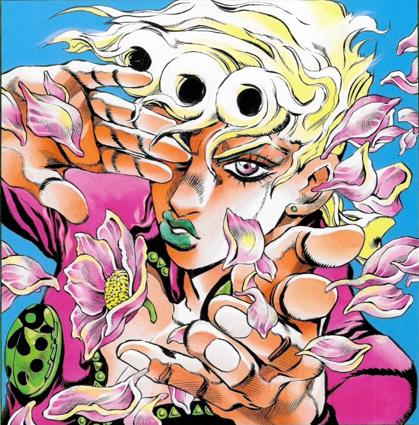
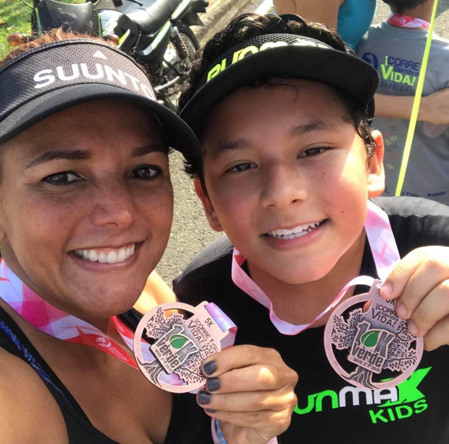
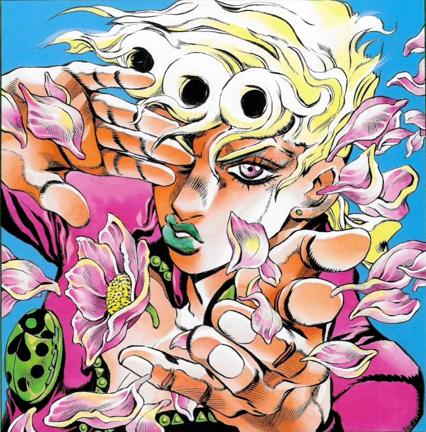
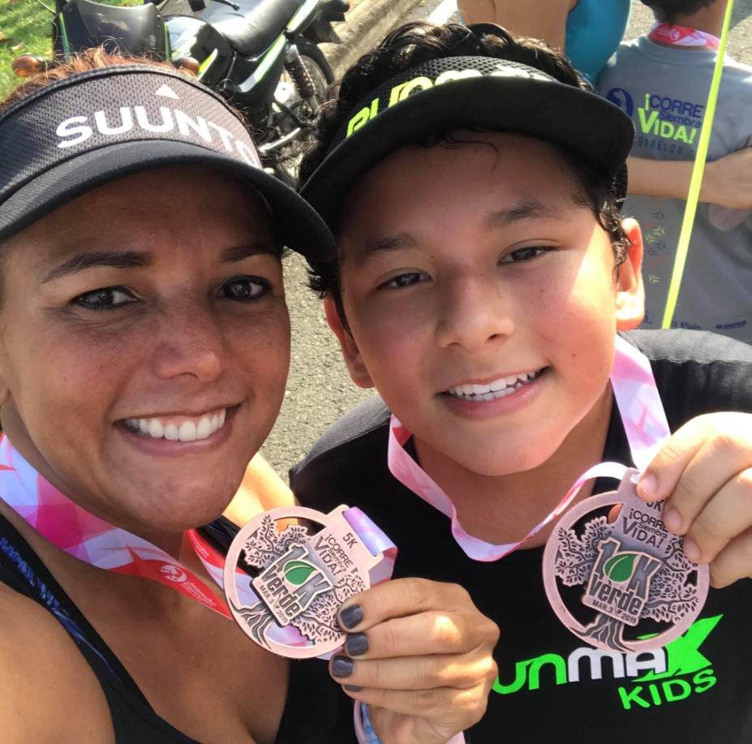
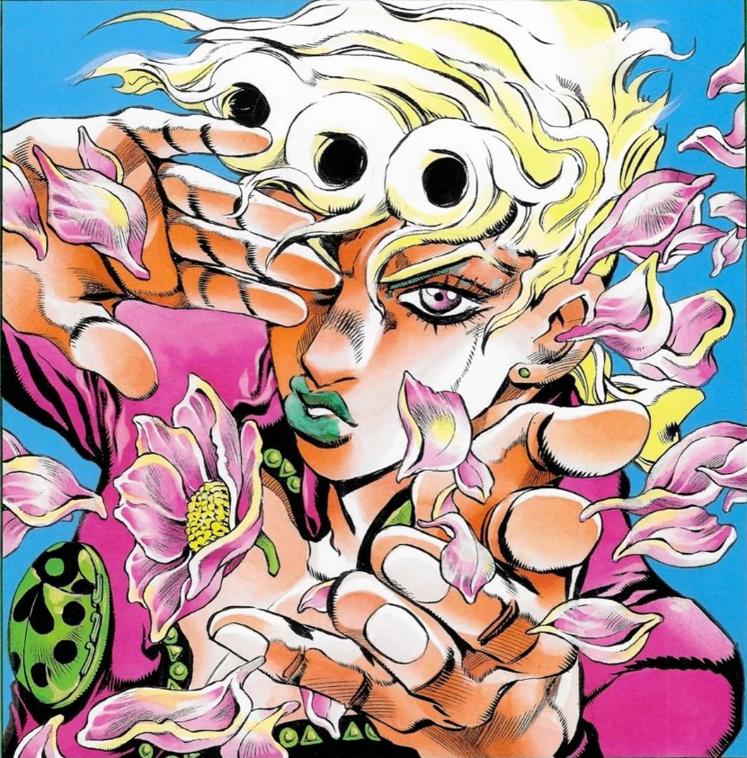
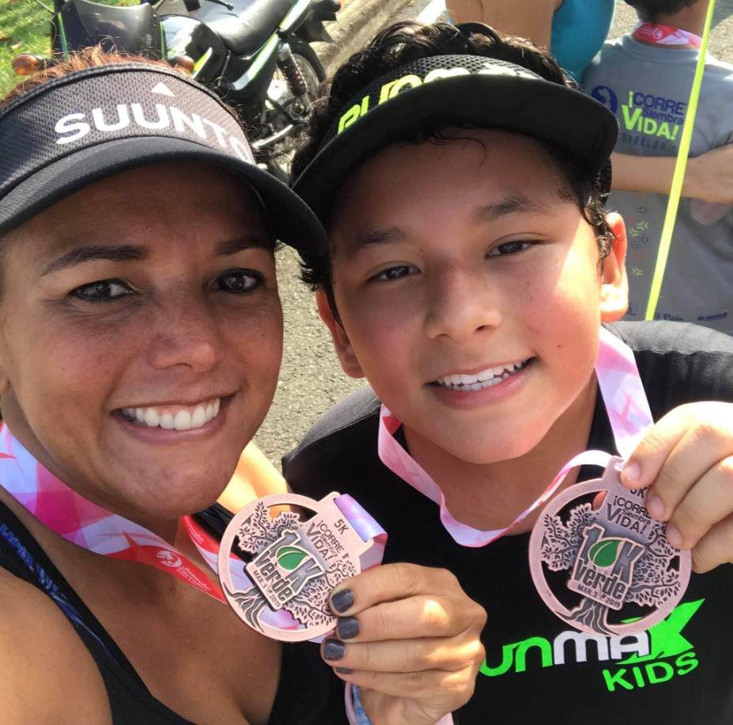
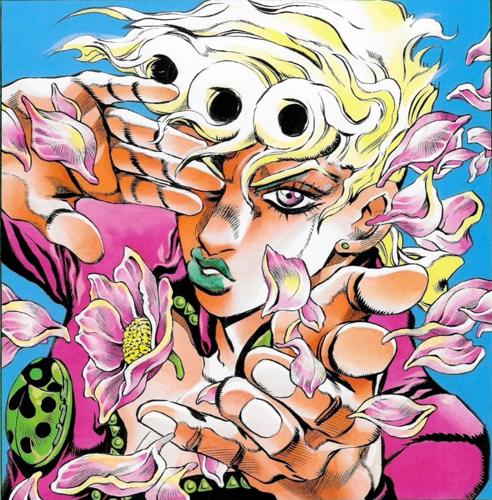
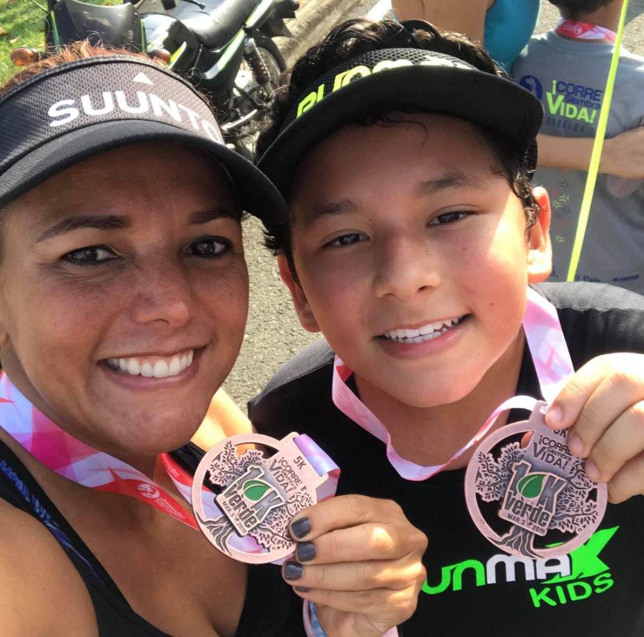
Mi familia y amigosMi mamá |
|
|
No tengo palabras suficientes para describir lo importante que es mi madre, Maria Ximena, en mi vida. Desde que tengo memoria, siempre hemos sido ella y yo, enfrentando todo juntos. Mi madre es el ser más trabajador y valiente que conozco. Durante años, ha trabajado jornadas de 10 horas, sacrificando todo lo posible para asegurarme un buen futuro. No importa lo difícil que fuera la situación, ella siempre encontraba la manera de darme lo que necesitaba. Es increíble pensar en todo lo que hizo, no solo por el esfuerzo físico, sino por el amor que siempre me ha demostrado. Sin ella, nada de lo que soy ahora habría sido posible. Su dedicación, su sacrificio y su cariño me han enseñado muchísimo sobre la vida y sobre lo que significa el verdadero amor. Nunca podré agradecerle lo suficiente por todo lo que ha hecho por mí, y siempre llevaré en el corazón cada uno de sus gestos, cada sacrificio. Y aunque sea poco probable que vea esto;Te amo, mamá, más de lo que las palabras pueden expresar. Siempre que tu necesites algo serás mi prioridad, la persona a la que mas atención le daré, la razón de vivir. Todos los días le agradezco a Dios por haberme dado la posibilidad de ser tu hijo, y siempore oro por tu bienestar, el hecho de que seas mi madre me hace sentir orgulloso de una manera de la que ni te puedes imaginar, gracias por siempre estar ahí para mi Sinceramente, todo lo que soy y todo lo que lograré en el futuro, se lo debo a ella. Estoy eternamente agradecido por su paciencia, su dedicación, y todo lo que ha hecho por mí. Te amo, mamá, y siempre te estaré agradecido por cada uno de tus sacrificios. Gracias por enseñarme que no hay límites cuando se trata de amor y esfuerzo. 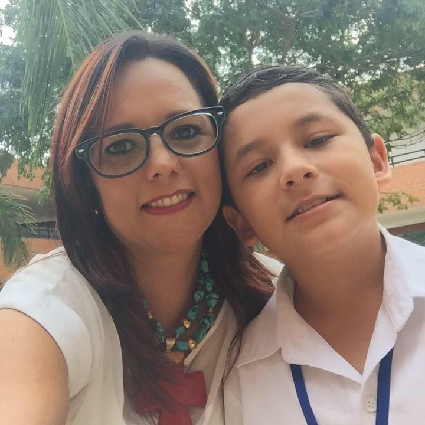 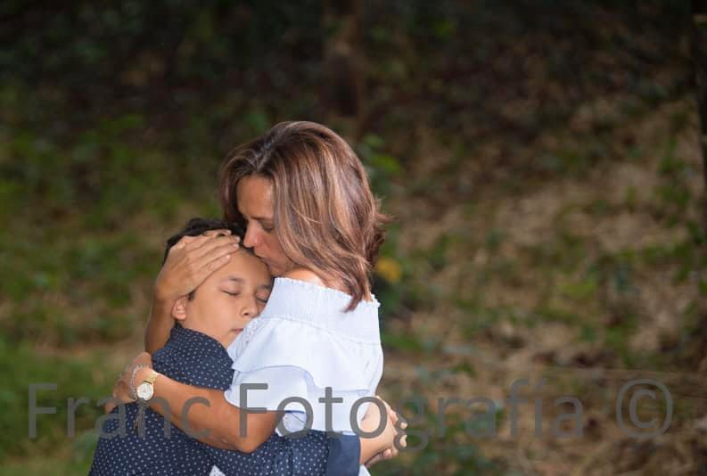 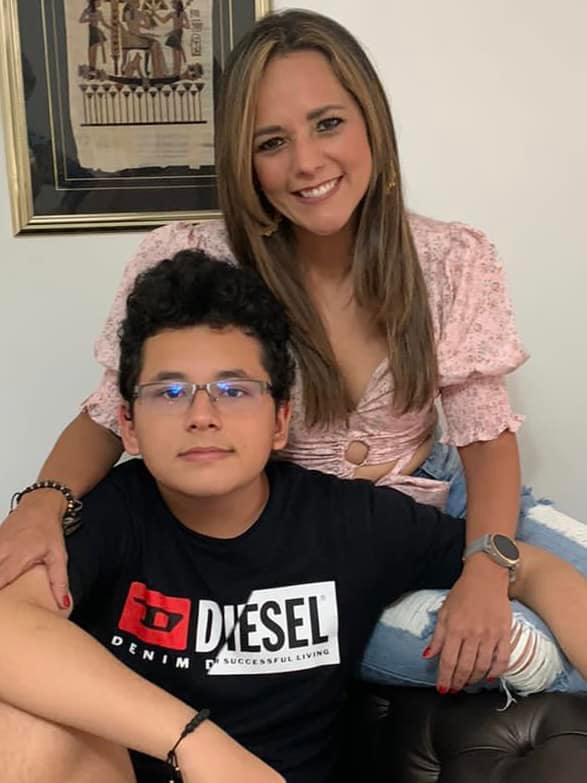CorreaJuan Andrés Correa y yo nos conocemos desde que éramos pequeños. Recuerdo que él era bastante introvertido al principio, pero un día decidí acercarme a él, y desde ese momento nuestra amistad empezó a crecer. Aunque al principio no hablábamos tanto, poco a poco fuimos descubriendo lo mucho que teníamos en común, y antes de darnos cuenta, ya éramos inseparables. A lo largo de los años, hemos compartido un sinfín de momentos juntos. Ya sea en las buenas o en las malas, siempre hemos estado el uno para el otro. Juan Andrés, a pesar de ser más reservado, siempre ha sido una persona en la que puedo confiar, alguien que me escucha y que está dispuesto a ayudar en cualquier situación. Su lealtad y sinceridad son algunas de las cosas que más aprecio de él. Lo que hace nuestra amistad tan especial es que, aunque el tiempo pase, nuestra conexión sigue siendo tan fuerte como siempre. No importa qué tan complicadas sean las circunstancias, sé que siempre podré contar con Juan Andrés. Él es, sin duda, mi amigo más importante y sé que nuestra amistad durará para siempre. 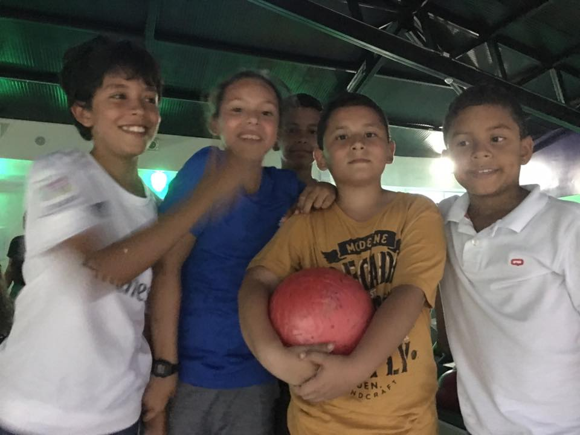 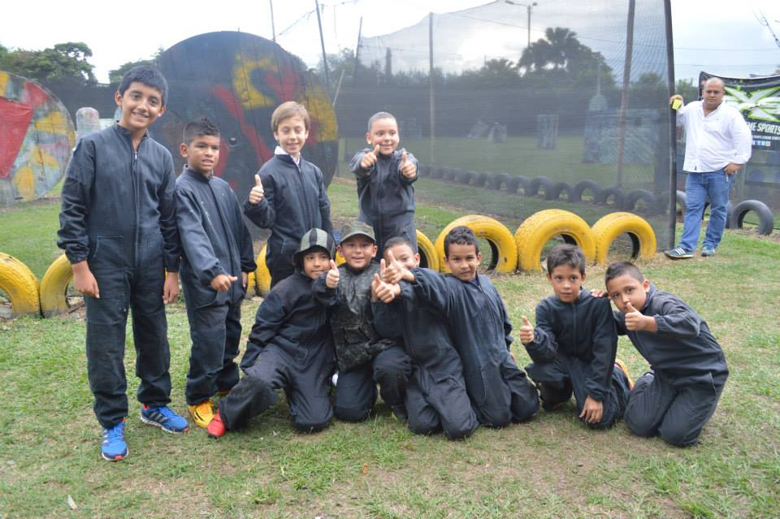Sara HoyosConocí a Sara Hoyos el año pasado, gracias a que compartimos un amor inmenso por Taylor Swift. Desde entonces, se ha convertido en alguien muy especial en mi vida, y hemos construido una gran amistad basada en nuestros gustos y muchas conversaciones. Lo que realmente me marcó de Sara fue cómo estuvo ahí para mí en momentos importantes y especiales. Cuando no tenía a nadie más con quien hablar o compartir lo que me estaba pasando, ella siempre estuvo presente, siendo un apoyo constante, brindándome una amistad que no esperaba pero que necesitaba tanto. Hoy en día, quiero muchísimo a Sara. La considero un pilar en mi vida, alguien en quien puedo confiar sin reservas. Su presencia y apoyo en momentos difíciles me han demostrado lo valiosa que es su amistad para mí. Siento que muchas veces ella no dimensiona lo mucho que es importante para mi, el hecho de saber que tengo alguien como ella en mi vida es algo que me pone muy feliz y tranquilo, enserio que la quiero muchisimo, Gracias sara por estár ahi para mi. 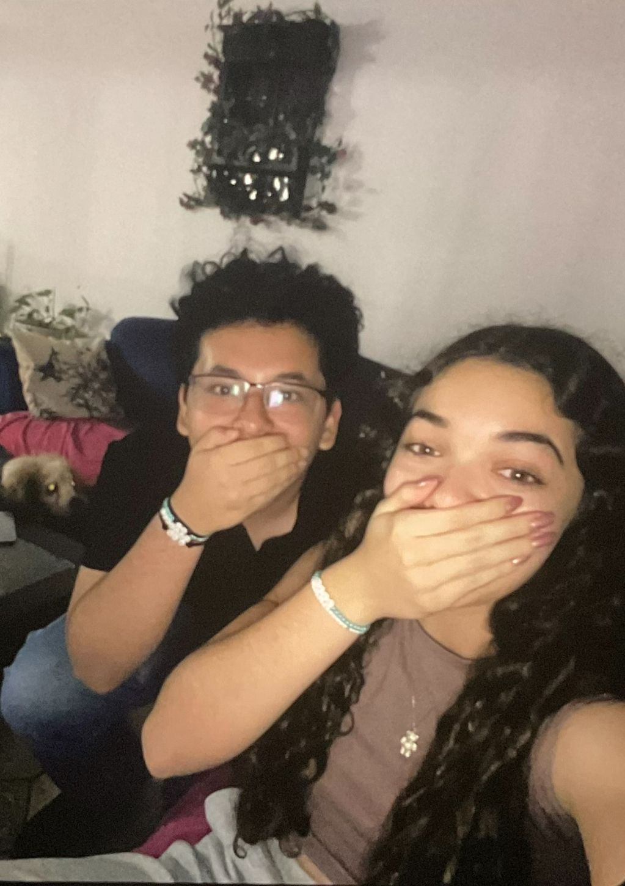 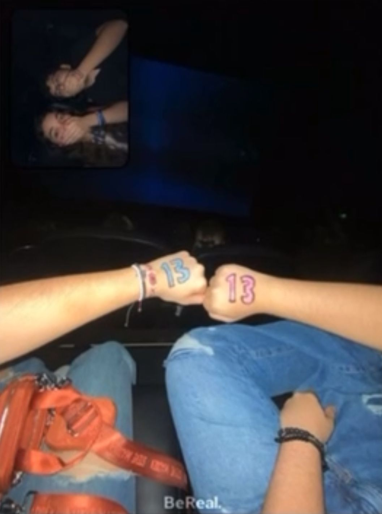 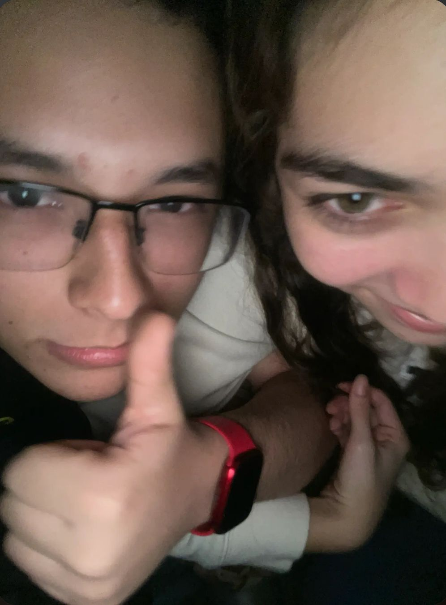Luisa VillaLuisa Villa es una persona muy especial en mi vida. Desde que la conocí en sexto grado, nos volvimos inseparables. Lo interesante es que, aunque a veces pasamos tiempo sin hablar, cuando volvemos a conectar, es como si nunca hubiera pasado el tiempo. Esa confianza y complicidad siempre están presentes, y eso es algo que valoro mucho. Una de las cosas que compartimos es nuestra pasión por Taylor Swift, lo cual es un plus increíble. Podemos hablar durante horas de su música, sus letras, y lo que significa para nosotros. Tener a alguien con quien compartir eso hace que nuestra amistad sea aún más especial. Pero lo que más me gusta de Luisa es su capacidad para alegrar mi día. Siempre tiene algo que decir, siempre sabe cómo levantar el ánimo, y es esa persona con la que puedes contar cuando necesitas un poco de luz. Su energía es contagiosa, y es imposible no quererla por eso. 

@Copyright 2024 Mandanos un mensaje via email a juanjoboar2006@gmail.com | |